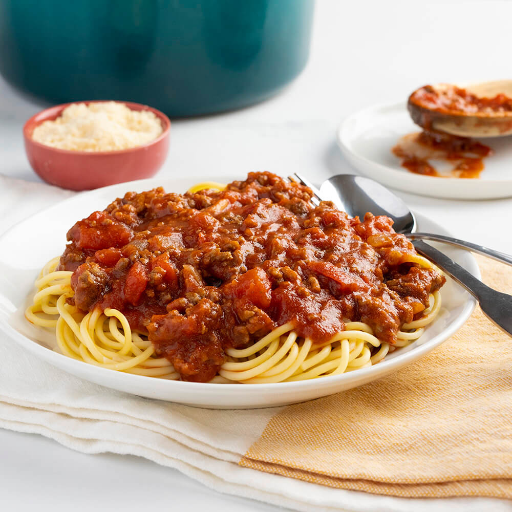
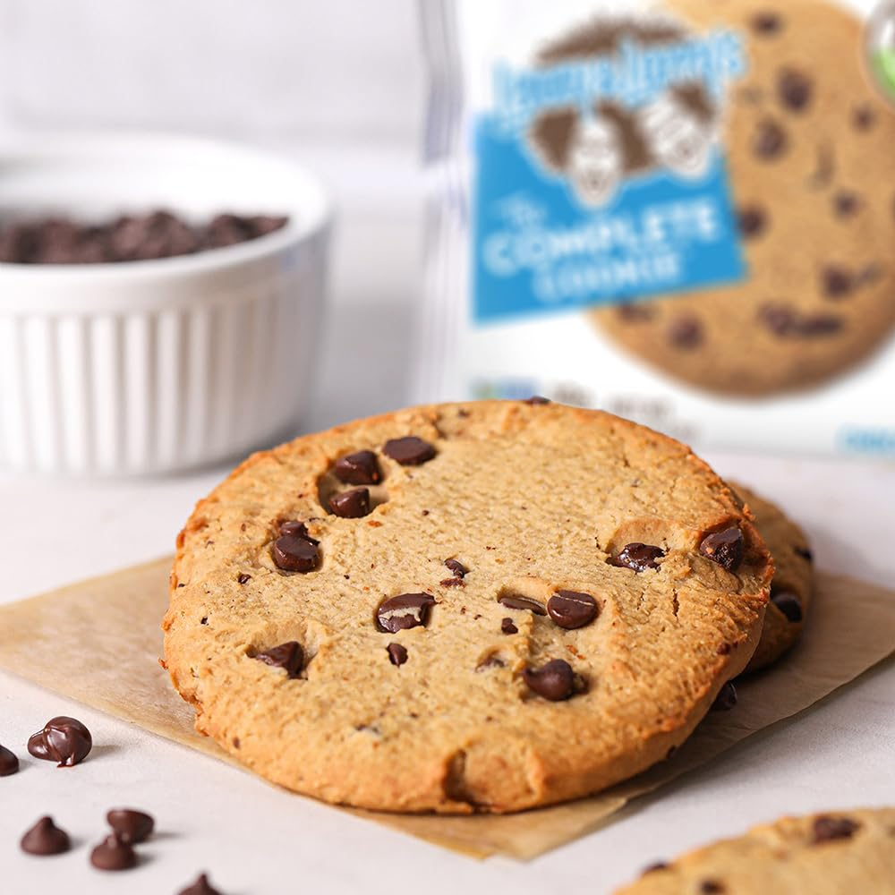

-
5-Minute Guacamole
Ingredients: Avocados, lime juice, salt, garlic, and cilantro.
Instructions:
- Mash avocados in a bowl.
- Add lime juice, salt, and minced garlic.
- Mix in chopped cilantro. Serve fresh!
-

Classic Spaghetti Bolognese
Ingredients: Spaghetti, ground beef, onion, garlic, tomato sauce, Italian herbs.
Instructions:
- Cook spaghetti according to package instructions.
- In a pan, sauté onion and garlic, then add ground beef until browned.
- Stir in tomato sauce and Italian herbs. Simmer for 10 minutes.
- Serve sauce over spaghetti.
-

Chocolate Chip Cookies
Ingredients: Butter, sugar, eggs, vanilla extract, flour, baking soda, salt, chocolate chips.
Instructions:
- Preheat oven to 350°F (175°C).
- Cream butter and sugar, then mix in eggs and vanilla.
- Add flour, baking soda, and salt, then fold in chocolate chips.
- Scoop dough onto a baking sheet and bake for 10-12 minutes.